Reverse UI
- Definition
-
For languages written from right to left, such as Arabic, all the user interface should be displayed right to left.
- Expression Rules
-
- Word and Sentence
- 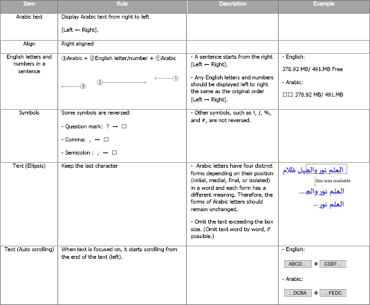
- Number and Unit
- 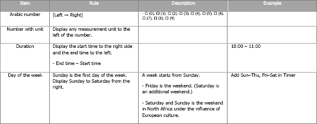
- Icon and Checkbox
- 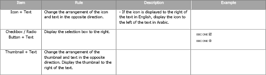
- Component
- 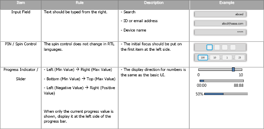
- Usage
-
- Layout
-
- UI components should be arranged from right to left and from top to bottom.
Basically, the initially focused item is the same as the basic UI (item-based, not position-based).
Exceptional cases exist. They should be described in the related pages.
* Exceptional case: When users are using the 5-directional key, the Reverse UI rules should not be applied.
If items are displayed from the left and aligned to the left, display the items from the right and align them to the right.
If items are displayed from the left and aligned to the center, keep the alignment but display the items from the right. - 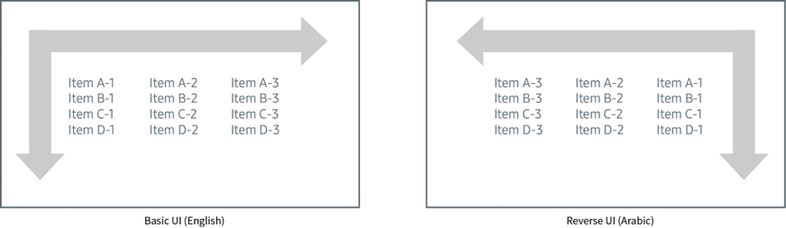
- UI components should be arranged from right to left and from top to bottom.
- Image Item and Grid
-
-
Change the alignment and display order of the icons that are shown on a thumbnail, to the opposite direction.
Keep the progress direction the same as the basic UI. - 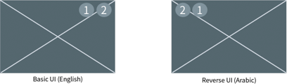
- The display order of thumbnails in a list must be right to left and top to bottom. Change the alignment of thumbnails from left-aligned to right-aligned.
- 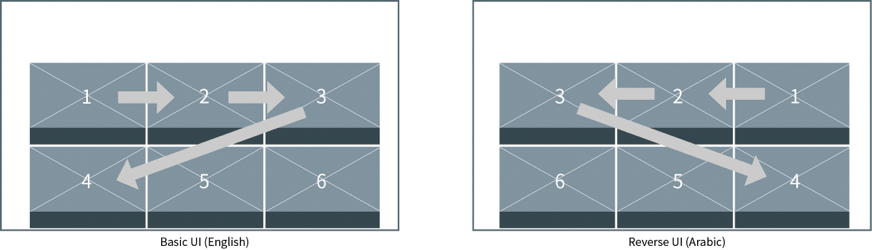
-
Change the alignment and display order of the icons that are shown on a thumbnail, to the opposite direction.
- List
-
-
The display order of items in a list is the same as the basic UI (top to bottom).
Change the alignment of items from left-aligned to right-aligned. - 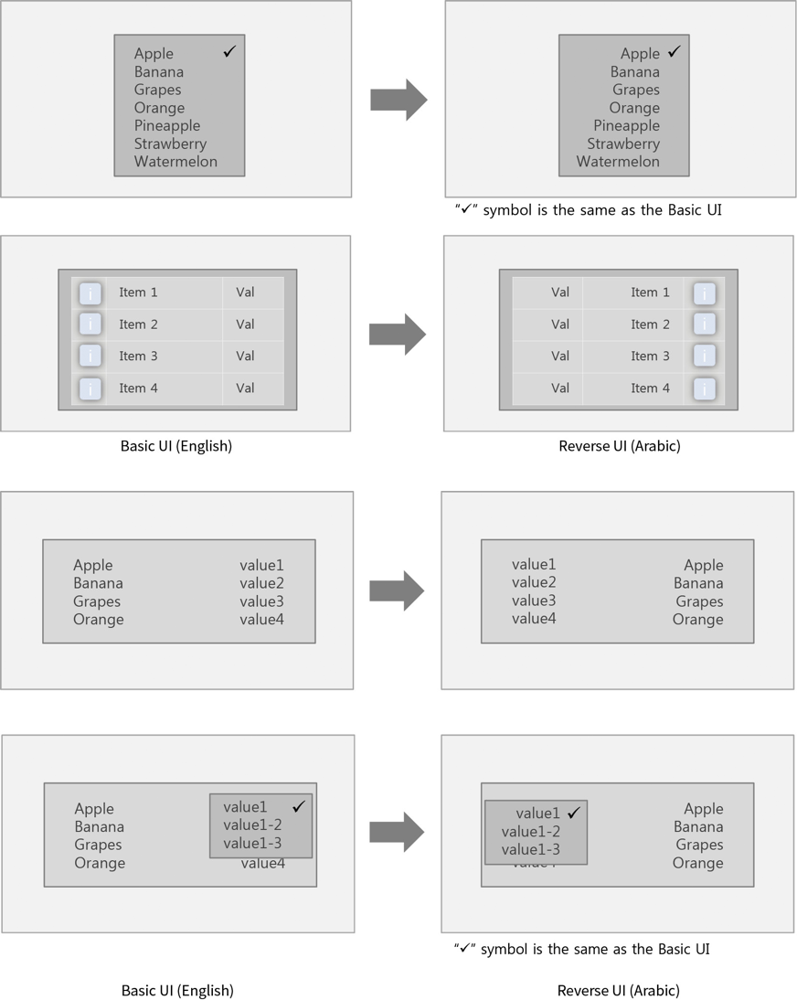
-
The display order of items in a list is the same as the basic UI (top to bottom).
- Popup
-
- Display items and components from the right according to the basic rule.
- 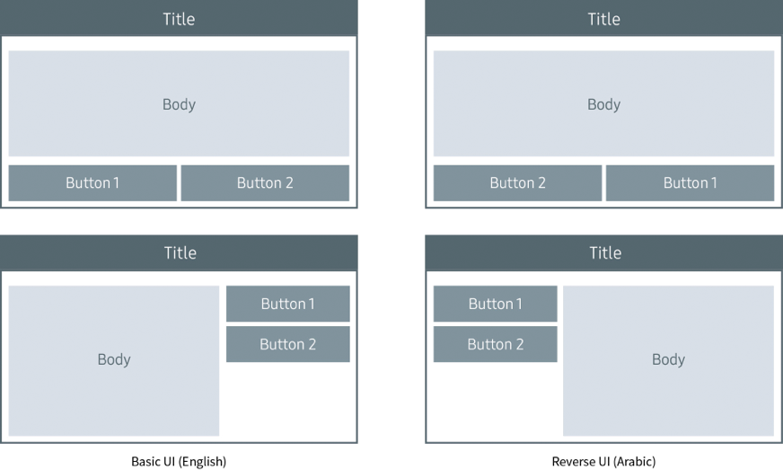
- Button
-
- Display the icon to the right of the text label.

- Notification
-
- Display items and components from the right according to the basic rule.
- 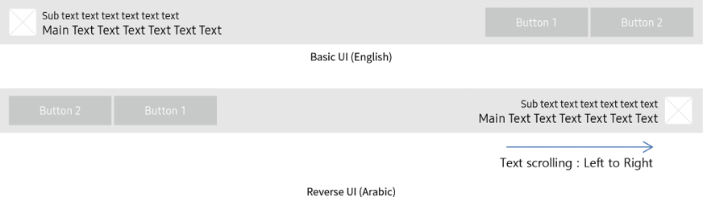
- Wizard
-
- The display order of step indicators is from right to left. Refer to the Expression Rules and Layout sections.
- 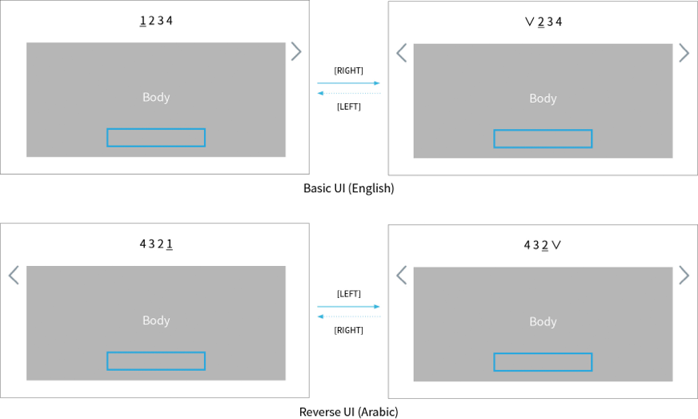
- *Tags :
- Checkbox, Radio Button, Button, Input Field, 1-line PIN Field, 2-line PIN Field, Image Item, Text Item, Progress Indicator, Slider, Spin Control, Grid, List, Notification, Popup